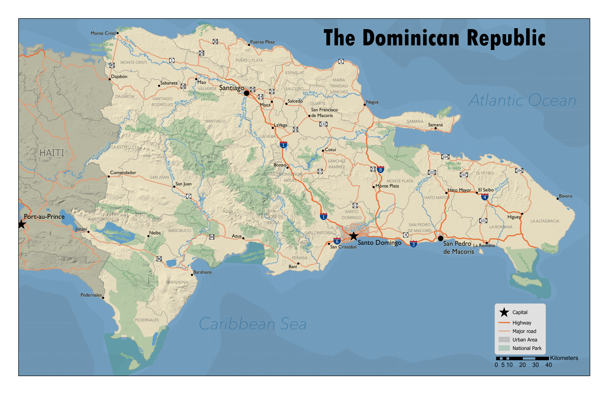

The Dominican Republic

Description
I was tasked with creating a general reference map of a country that was both informative and aesthetically pleasing for a cartographic design class at BYU. The Map was designed to appear in a college level world atlas. The map requirements were to include populated places, roads, water features, internal and external administrative boundaries, national parks, and terrain. As such, I gained experience in designing maps to inform the viewer of all of all of these features in balance. I gained valuable cartography and design skills that have helped me create even more meaningful maps.
Tools Used
- ArcGIS Pro